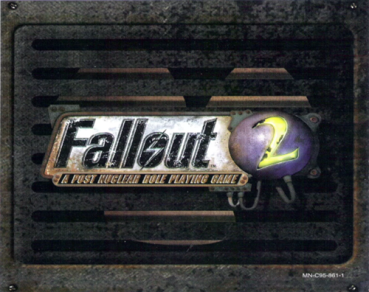

FALLOUT 2
Fallout 2 — компьютерная ролевая игра с открытым миром, разработанная Black Isle Studios и изданная Interplay Entertainment в 1998 году. В странах СНГ игра была локализована и выпущена в 2006 году компанией 1С.
Является второй частью из серии Fallout. Несмотря на то, что игровой движок практически не изменился с первой части, благодаря детальной проработке игрового мира и сюжета, продолжению удалось превзойти её в популярности.
Сюжет
Спустя 80 лет после событий Fallout, уединённая деревня Арройо, основанная Выходцем из убежища (англ. Vault Dweller), начала приходить в упадок. Требовались новые силы, чтобы вдохнуть жизнь в поля. Старейшина деревни посылает Избранного (англ. Chosen One, персонаж может быть как мужского, так и женского пола) в пустоши за чудом довоенной инженерной техники — ГЭКК (англ. GECK, Garden of Eden Creation Kit — ГЭКК, Генератор Эдемских Кущ Компактный), предназначенный для рекультивации послевоенной земли вышедшими жителями убежищ. Избранный отправляется в опасные поиски.
В ходе поисков Избранный сталкивается с Анклавом — военизированной группировкой, образованной из остатков довоенного правительства США. Обладая военными и научными наработками довоенных США, Анклав планирует очистить территории пустошей от мутировавших форм жизни с помощью изменённого Вируса Рукотворной Эволюции (ВРЭ). Теперь Избранному необходимо не только спасти своих односельчан, но и уничтожить Анклав.
Игровой Процесс
Движок Fallout 2 претерпел мало изменений по сравнению с Fallout, вследствие чего игровой процесс почти ничем не отличается от предшественника. Однако игровой мир по сравнению с первой частью был увеличен.
Сюжет в игре развивается по мере получения и выполнения квестов. Квесты — это задания, появляющиеся перед игроком по ходу игры или даваемые ему другими персонажами. В Fallout 2 существует несколько сотен квестов. Выполнение начальных квестов в Арройо не требует больших усилий и служит скорее подготовкой игрока к будущим трудностям. Поначалу Избранный располагает очень скудной амуницией и небольшим количеством денег. Ему дано первое задание и указано местоположение ближайшего городка — Кламата, на глобальной карте. Со временем игроку может быть доступен автомобиль — Кризалис Хайвеймен (Chrysalis Highwayman), который существенно ускоряет путешествие по глобальной карте и может хранить вещи в багажнике.
Прохождение игры возможно путём выбора как «добрых», так и «злых» вариантов решения квестов. При этом статус героя в том или ином городе меняется в диапазоне от «боготворят» до «проклинают». В зависимости от этого меняется и отношение различных персонажей. В целом, если герой решит «идти по пути зла», сознательно выбирая только аморальные варианты решения квестов и игнорируя позитивные, его ждёт существенно меньше опыта.
После выполнения сюжетных заданий игрок имеет возможность продолжить играть, за что в некоторых локациям будет вознаграждён различными юмористическими вариантами диалогов от разработчиков.
Подробнее об этой игре, вы можете посмотреть на сайте википедия